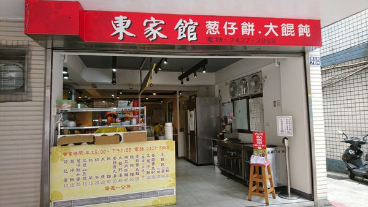
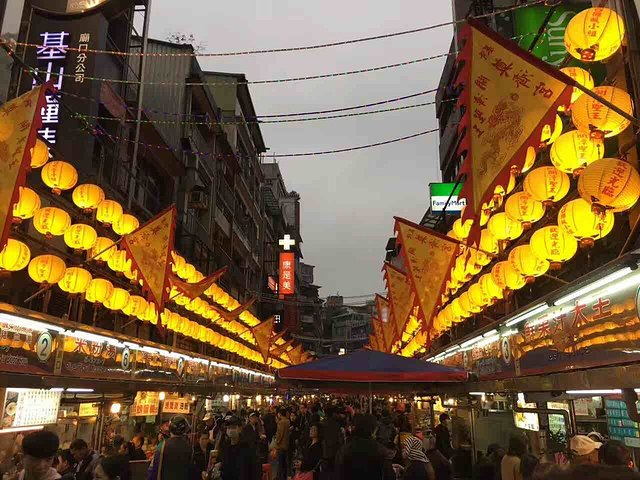

| 基隆 | 新竹 | 台北 |
基隆：
北部地區的美食可以分成新北地區、台北地區、 新竹地區、基隆地區、桃園地區就讓我來跟各位大大們依序介紹吧~
首先從台灣最北部的基隆地區開始：一說到基隆一想到的就是基隆的廟口美食啦，廟口裡跟傳統市場差不多，
早餐阿、小吃阿，熱炒阿，之類的通通都有，如果早上起來不想吃廟口裡面那些重鹹重口味的食物，
可以考慮臺式早餐(蔥油餅)，他跟一般的蔥油餅不一樣的地方在一般蔥油餅外面的皮是一般的餅皮，
但是這家的蔥油餅外面是包了一層蛋，裡面包著好吃的蔥花，「除了經典臺式早餐–燒餅、油條外，
蔥油餅跟水煎包也是基隆人的在地美食。蔥油餅搭配餛飩湯的絕妙組合，絕對值得一試。
多種口味的水煎包，簡單又美味，更是早餐的最佳選擇。美好的一天，就從美食開始吧～」
首先! 第一家：西定路的東家館蔥油餅
蔥油餅真的很好吃又很唰嘴～沒有什麼特別的地方，就是「蔥餅」，有些蔥餅是用煎的，
有些蔥餅是煎完再烤，我覺得這家好吃的原因可能在於很油呢～

(圖片來源：https://goo.gl/Gj9yBp)
第二個：基隆廟口夜市
基隆廟口夜市可以說是台灣特有小吃集中營之一。在廟口夜市除了能感受到攤販此起彼落的叫賣聲與濃濃的人情味外，
還可以感受到攤販在烹煮美食的香氣與熱氣。來基隆不能錯過～近基隆火車站，範圍不大但美食極多，
且攤販規劃整齊，每晚從五點後會開始較熱鬧。在這裡嘴巴沒有一刻是停的，讓自己能感覺有一個超級胃！
很難想像這麼小的一個夜市，盡然有著大大小小快200多的攤位，且大多數用料實在而且價錢公道。
著名小吃有鼎邊趖、天婦羅、肉羹營養三明治木瓜牛奶、一口吃香腸、泡泡冰這些~

(圖片來源：https://goo.gl/bubvuN)